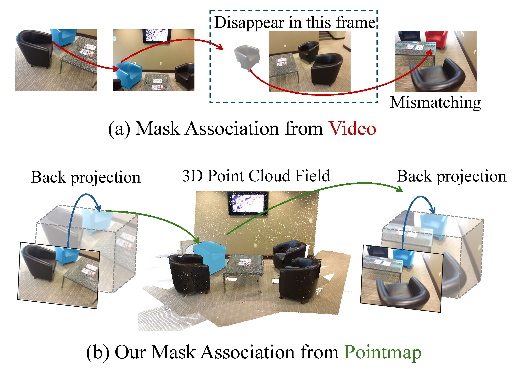
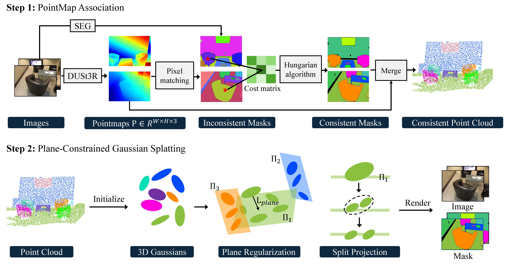

Achieving a consistent and compact 3D segmentation field is crucial for maintaining semantic coherence across views and accurately representing scene structures.
Previous 3D scene segmentation methods rely on video segmentation models to address inconsistencies across views, but the absence of spatial information often leads to object misassociation when object temporarily disappear and reappear.
Furthermore, in the process of 3D scene reconstruction, segmentation and optimization are often treated as separate tasks. As a result, optimization typically lacks awareness of semantic category information, which can result in floaters with ambiguous segmentation.
To address these challenges, we introduce CCGS, a method designed to achieve both view-consistent 2D segmentation and a compact 3D Gaussian segmentation field. CCGS incorporates pointmap association and a piecewise-plane constraint.
First, we establish pixel correspondence between adjacent images by minimizing the Euclidean distance between their pointmaps. We then redefine object mask overlap accordingly. The Hungarian algorithm is employed to optimize mask association by minimizing the total matching cost, while allowing for partial matches.
To further enhance compactness, the piecewise-plane constraint restricts point displacement within local planes during optimization, thereby preserving structural integrity.
Experimental results on ScanNet and Replica datasets demonstrate that CCGS outperforms existing methods in both 2D panoptic segmentation and 3D point understanding, excelling in zero-shot scene segmentation tasks.
Method

Differences in mask association: Video vs.Pointmap.

The pipeline of our method.
Results
Differences in mask association: Video vs.Pointmap.